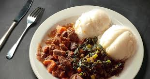

UGALI

DESCRIPTION
this is another awesome East African special that is made from corn flour.
INGRIDIENTS
STEPS TO MAKE
- mix a small amount of flour with water then boil
- as the mixture stiffens add little amount of flour until the mixture hardens
- upon finnish serve while hot
go back